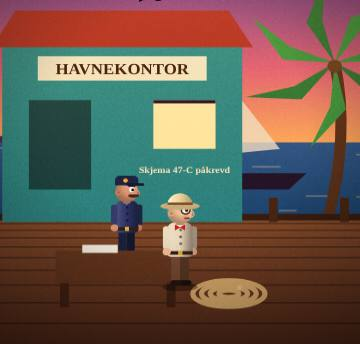
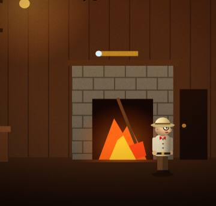
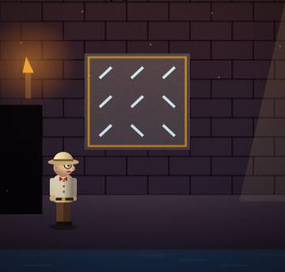
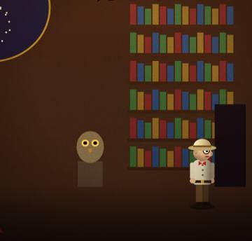
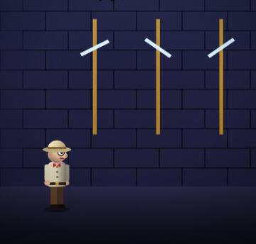
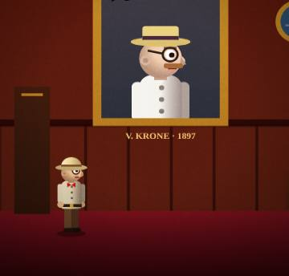

Et gåte-eventyr fra Karibia, 1934. Ikke et idle-spill.






💾 Eller last ned spillet som én fil og spill uten nett på hvilken som helst PC eller mobil, også fra en minnepinne: norsk · English (ca. 13 MB, åpnes i nettleseren)
0.12.4 · 8. nov 2026
0.12.3 · 8. nov 2026
0.12.2 · 8. nov 2026
Det finnes millioner av idle-spill. Dette er ikke et av dem.
Her skjer ingenting før du tenker. Ingen tall som vokser mens du sover, ingen kister å åpne og ingen varsler som lokker deg tilbake. Bare deg, en gåte og ekte kunnskap.
| Idle-spill | Sunken Siren | |
|---|---|---|
| Hvem spiller? | Spillet spiller seg selv | Du løser hver eneste gåte |
| Lærer du noe? | Nei | Historie, språk, matte, astronomi og logikk |
| Penger? | Kjøp deg fram | Ingenting å kjøpe. Aldri. |
| Varsler? | «Kom tilbake!» | Ingen. Spillet foreslår pauser. |
| Står du fast? | Betal eller vent | 🧭 viser alltid neste steg, gratis |
● LIVE: oppdateres i det du lagrer i spillet. Alt ligger bare på denne enheten.
Vi vet ikke hvem du er, og vi vil ikke vite det.
Vil du slette alt? Trykk her, så forsvinner fremgangen fra denne enheten:
Foreldre og lærere: spillet samler ikke inn personopplysninger.
Besøksteller: vi teller ikke. ✌
Laget i Norge · Stemmer: Piper · Musikk: MusicGen